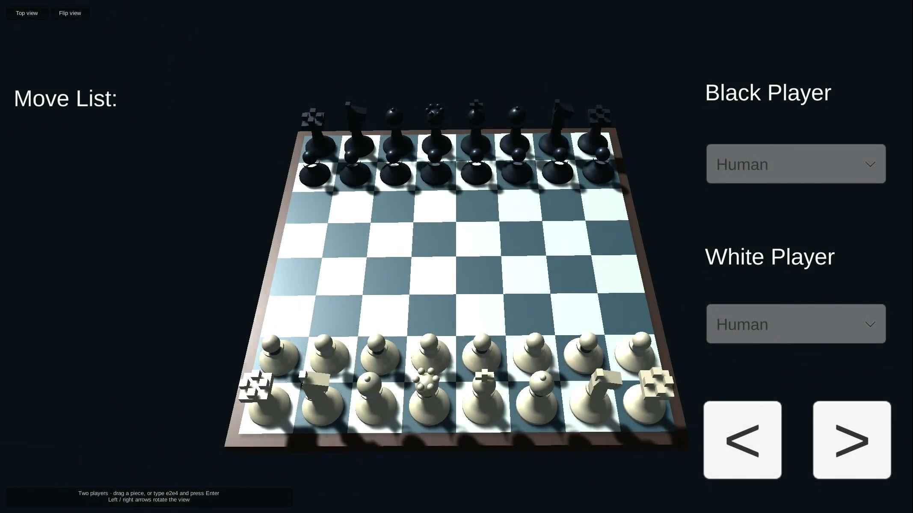

Experience
Play a two-player chess game on a three-dimensional board, with legal moves, move history, and camera controls.

Description
The game connects piece selection with the rules governing where that piece can move. The board shows the position that results from each turn, while the move history preserves the sequence that produced it.
Camera controls make it possible to inspect the three-dimensional presentation without changing the underlying game state. The project brings the board interaction, rules, and viewing controls into one playable interface.
Detailed features
Chessboard and pieces
The whole board provides the state for a strategic decision. Each placement or move changes both the player’s opportunities and the threats that need to be prevented.
Turn-based decisions
Turn-based interaction separates choosing an action from resolving it. That structure gives the player time to compare options and understand the resulting change in game state.
Board interaction
The whole board provides the state for a strategic decision. Each placement or move changes both the player’s opportunities and the threats that need to be prevented.
Build summary
The project is presented with Unity · C# · WebGL. Its implementation connects the input or controls, the project’s changing state, and the rendered interface. The Source action opens the saved code or build material for this entry.
- Technology
- Unity · C# · WebGL
- Scope
- Unity project
- Feature focus
- Chessboard and pieces
Feature video
Project recording · 2134 × 1200 · Original resolution